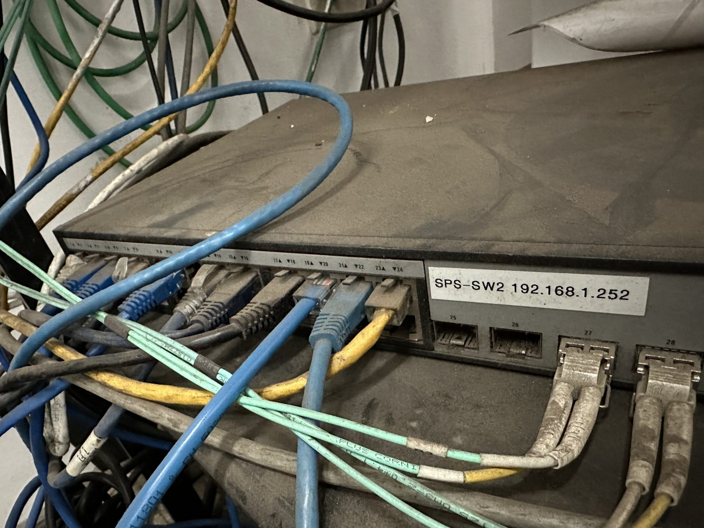
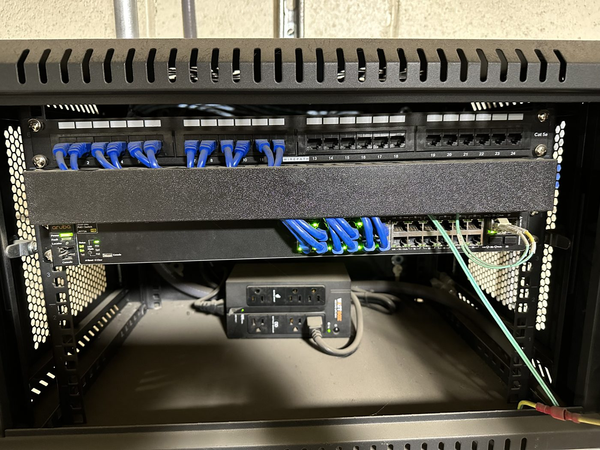
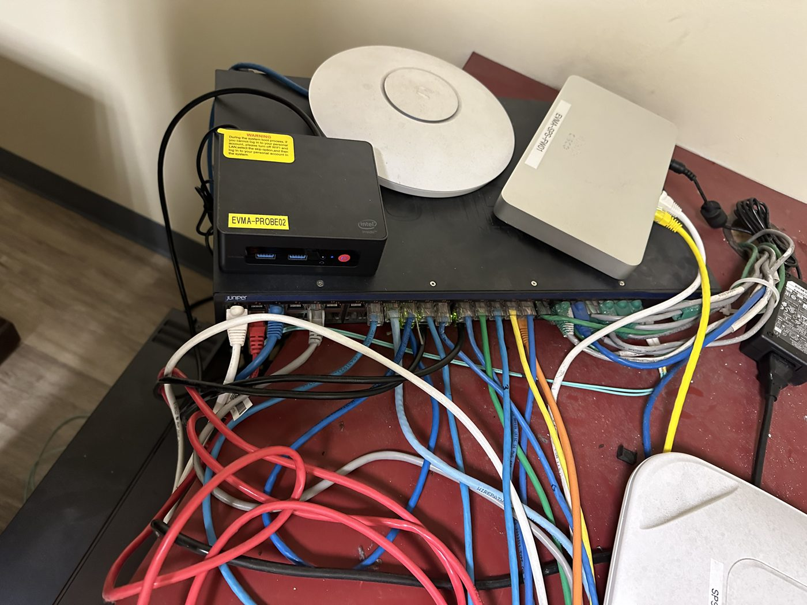
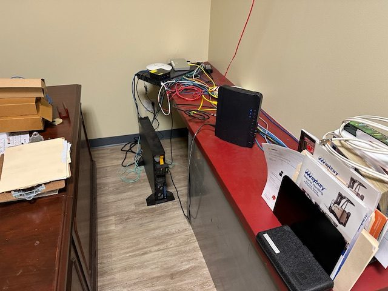
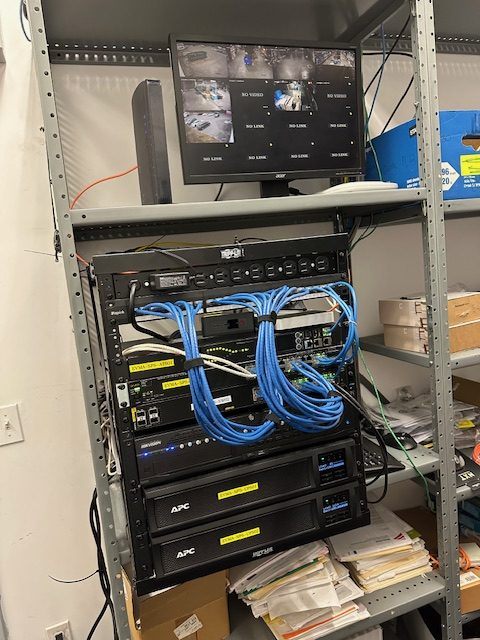

Dominic
DominicSingle switch: off the ground and into a rack
A lone switch sitting on the floor with tangled patch cables, moved into a wall-mount rack with a patch panel and cable management.


Hands-on work
Network clean-ups and rebuilds. Click any photo to enlarge it.
A lone switch sitting on the floor with tangled patch cables, moved into a wall-mount rack with a patch panel and cable management.


Equipment scattered across a desk, consolidated into a closet rack with dual battery backups and a network video recorder for the cameras.


